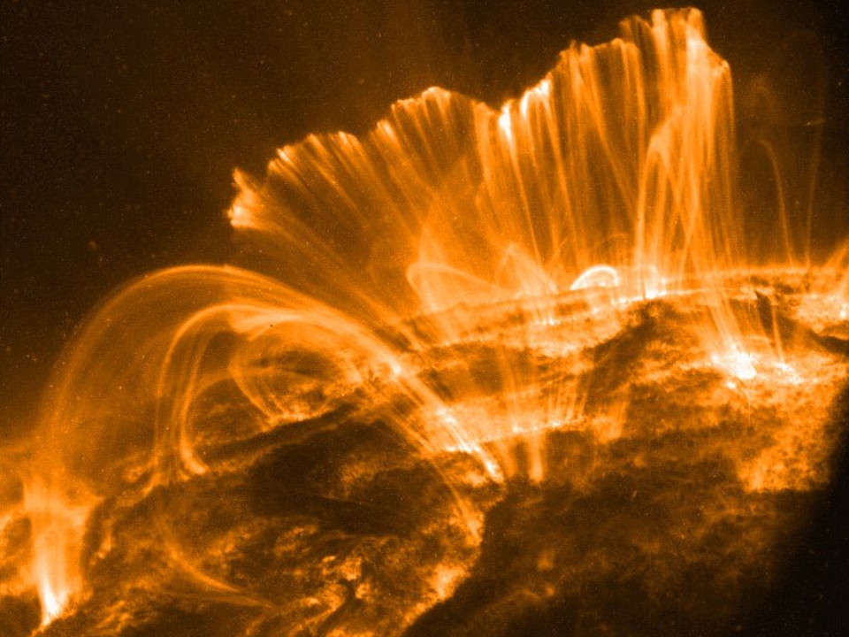

Solar Flares
Solar flares are intense bursts of electromagnetic radiation in the suns atmosphere typically occurring in active regions and often accompanied by other eruptive solar phenomena (such as a CME)
Space Weather is a group of phenomena caused by the sun that effects earth and the other bodies in the solar system within the sun's heliosphere (driven by a constant flow of charged particles called solar wind) in a variety of ways. It's study is primarily concerned with how these phenomena affect life on earth and our technology, including communication systems and power grids.
The rate and intensity of space weather can vary greatly depending on the activity of the sun, which increases and decreases in cycles, solar cycles to be exact. Solar cycles are approximately 11 years long, and goes through stages of low activity (called the solar minimum), and periods of high activity (called the solar maximum)
Solar flares are intense bursts of electromagnetic radiation in the suns atmosphere typically occurring in active regions and often accompanied by other eruptive solar phenomena (such as a CME)
Also known as the northern lights (aurora borealis) or southern lights (aurora australis), auroras are colorful, dynamic, and often visually delicate displays of an intricate dance of particles and magnetism between the Sun and Earth called space weather. When energetic particles from space collide with atoms and molecules in the atmosphere, they can cause the colorful glow that we call auroras.
Solar wind is a constant stream of energized particles, primarily protons and electrons, that flow out of the suns uppermost layers of its atmosphere.
NASA - How do changes in the space environment affect humanity?

{kind=link}